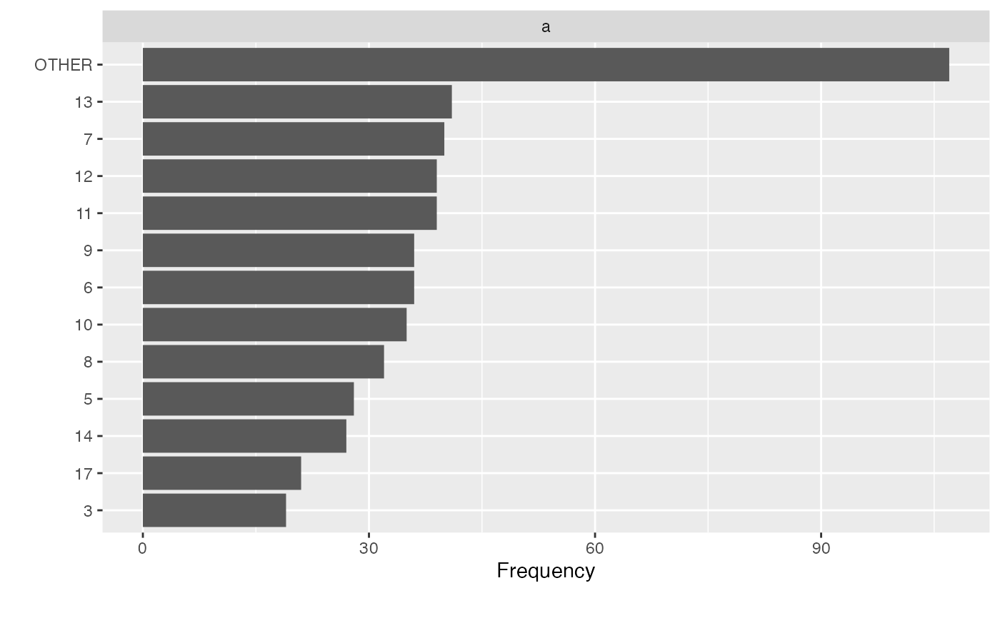
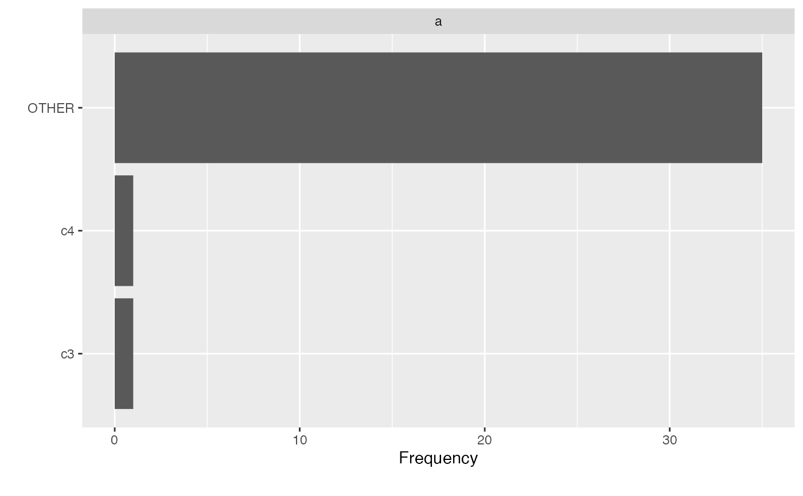

group_category.RdSometimes discrete features have sparse categories. This function will group the sparse categories for a discrete feature based on a given threshold.
group_category( data, feature, threshold, measure, update = FALSE, category_name = "OTHER", exclude = NULL )
| data | input data |
|---|---|
| feature | name of the discrete feature to be collapsed. |
| threshold | the bottom x% categories to be grouped, e.g., if set to 20%, categories with cumulative frequency of the bottom 20% will be grouped |
| measure | name of feature to be used as an alternative measure. |
| update | logical, indicating if the data should be modified. The default is |
| category_name | name of the new category if update is set to |
| exclude | categories to be excluded from grouping when update is set to |
If update is set to FALSE, returns categories with cumulative frequency less than the input threshold. The output class will match the class of input data.
If update is set to TRUE, updated data will be returned, and the output class will match the class of input data.
If a continuous feature is passed to the argument feature, it will be force set to character-class.
# Load packages library(data.table) # Generate data data <- data.table("a" = as.factor(round(rnorm(500, 10, 5))), "b" = rexp(500, 500)) # View cumulative frequency without collpasing categories group_category(data, "a", 0.2)#> a cnt pct cum_pct #> 1: 13 41 0.082 0.082 #> 2: 7 40 0.080 0.162 #> 3: 11 39 0.078 0.240 #> 4: 12 39 0.078 0.318 #> 5: 6 36 0.072 0.390 #> 6: 9 36 0.072 0.462 #> 7: 10 35 0.070 0.532 #> 8: 8 32 0.064 0.596 #> 9: 5 28 0.056 0.652 #> 10: 14 27 0.054 0.706 #> 11: 17 21 0.042 0.748 #> 12: 3 19 0.038 0.786# View cumulative frequency based on another measure group_category(data, "a", 0.2, measure = "b")#> a cnt pct cum_pct #> 1: 7 0.08783473 0.08852054 0.08852054 #> 2: 13 0.08424364 0.08490141 0.17342195 #> 3: 8 0.08401002 0.08466596 0.25808791 #> 4: 9 0.08298358 0.08363151 0.34171942 #> 5: 11 0.07865060 0.07926470 0.42098413 #> 6: 12 0.07650944 0.07710682 0.49809095 #> 7: 6 0.06974521 0.07028978 0.56838072 #> 8: 5 0.06906425 0.06960350 0.63798422 #> 9: 10 0.06108373 0.06156067 0.69954489 #> 10: 17 0.04584915 0.04620714 0.74575203 #> 11: 14 0.04347191 0.04381133 0.78956337# Group bottom 20% categories based on cumulative frequency group_category(data, "a", 0.2, update = TRUE) plot_bar(data)# Exclude categories from being grouped dt <- data.table("a" = c(rep("c1", 25), rep("c2", 10), "c3", "c4")) group_category(dt, "a", 0.8, update = TRUE, exclude = c("c3", "c4")) plot_bar(dt)# Return from non-data.table input df <- data.frame("a" = as.factor(round(rnorm(50, 10, 5))), "b" = rexp(50, 10)) group_category(df, "a", 0.2)#> a cnt pct cum_pct #> 1 10 6 0.12 0.12 #> 2 11 4 0.08 0.20 #> 3 14 4 0.08 0.28 #> 4 6 4 0.08 0.36 #> 5 15 3 0.06 0.42 #> 6 16 3 0.06 0.48 #> 7 13 3 0.06 0.54 #> 8 12 3 0.06 0.60 #> 9 19 2 0.04 0.64 #> 10 9 2 0.04 0.68 #> 11 20 2 0.04 0.72 #> 12 7 2 0.04 0.76 #> 13 4 2 0.04 0.80group_category(df, "a", 0.2, measure = "b", update = TRUE)#> a b #> 1 OTHER 0.020373305 #> 2 OTHER 0.052507619 #> 3 OTHER 0.081805921 #> 4 19 0.009925348 #> 5 11 0.123021504 #> 6 14 0.144656546 #> 7 16 0.083169172 #> 8 9 0.213948655 #> 9 OTHER 0.080024696 #> 10 10 0.124592741 #> 11 20 0.256929572 #> 12 14 0.003419408 #> 13 10 0.098786739 #> 14 OTHER 0.069425177 #> 15 10 0.001624242 #> 16 19 0.863716054 #> 17 OTHER 0.044421191 #> 18 OTHER 0.020331713 #> 19 9 0.103372486 #> 20 6 0.133517823 #> 21 OTHER 0.047434915 #> 22 OTHER 0.031668132 #> 23 OTHER 0.081896676 #> 24 OTHER 0.006090181 #> 25 14 0.071219310 #> 26 10 0.064981094 #> 27 6 0.285785574 #> 28 16 0.073774583 #> 29 OTHER 0.054916968 #> 30 6 0.005104824 #> 31 OTHER 0.014855876 #> 32 OTHER 0.092099438 #> 33 OTHER 0.070745972 #> 34 16 0.031218843 #> 35 10 0.067868470 #> 36 OTHER 0.066864912 #> 37 10 0.088797072 #> 38 OTHER 0.039481432 #> 39 OTHER 0.021024986 #> 40 18 0.202653392 #> 41 20 0.104911416 #> 42 11 0.077060431 #> 43 6 0.039111814 #> 44 OTHER 0.096057286 #> 45 OTHER 0.028048669 #> 46 14 0.059014897 #> 47 OTHER 0.041757003 #> 48 11 0.289007986 #> 49 OTHER 0.024127883 #> 50 11 0.112046068group_category(df, "a", 0.2, update = TRUE)#> a b #> 1 OTHER 0.020373305 #> 2 15 0.052507619 #> 3 OTHER 0.081805921 #> 4 19 0.009925348 #> 5 11 0.123021504 #> 6 14 0.144656546 #> 7 16 0.083169172 #> 8 9 0.213948655 #> 9 13 0.080024696 #> 10 10 0.124592741 #> 11 20 0.256929572 #> 12 14 0.003419408 #> 13 10 0.098786739 #> 14 15 0.069425177 #> 15 10 0.001624242 #> 16 19 0.863716054 #> 17 13 0.044421191 #> 18 7 0.020331713 #> 19 9 0.103372486 #> 20 6 0.133517823 #> 21 4 0.047434915 #> 22 13 0.031668132 #> 23 7 0.081896676 #> 24 12 0.006090181 #> 25 14 0.071219310 #> 26 10 0.064981094 #> 27 6 0.285785574 #> 28 16 0.073774583 #> 29 12 0.054916968 #> 30 6 0.005104824 #> 31 OTHER 0.014855876 #> 32 OTHER 0.092099438 #> 33 OTHER 0.070745972 #> 34 16 0.031218843 #> 35 10 0.067868470 #> 36 OTHER 0.066864912 #> 37 10 0.088797072 #> 38 OTHER 0.039481432 #> 39 12 0.021024986 #> 40 OTHER 0.202653392 #> 41 20 0.104911416 #> 42 11 0.077060431 #> 43 6 0.039111814 #> 44 4 0.096057286 #> 45 15 0.028048669 #> 46 14 0.059014897 #> 47 OTHER 0.041757003 #> 48 11 0.289007986 #> 49 OTHER 0.024127883 #> 50 11 0.112046068